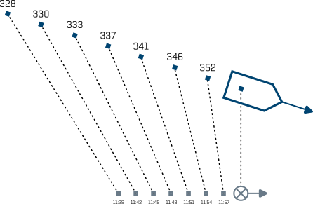

WO-Trainer Uboote HILFE
Die Interpetation des Contact Evaluation Plot (CEP), ist die höchste Kunst des Ubootwachoffiziers. Auch heutzutage wo die Arbeit des WOs sehr gut durch Führungswaffeneinsatzsysteme unterstützt wird, bleibt eine manuelle Interpretation des CEP unerlässlich. Ihre Aufgabe ist es immer, zusätzlich zu allen Anlagen an Bord, das Lagebild in Ihrem Kopf zu halten. Deutsche Uboote sind immer, egal bei welchem Ausfall welcher Anlagen, klar für Sehrohrtiefe. Weiterhin werden Sie bei der Interpretation des CEP alle bisher gelernten Inhalte über die Zusammenhänge von $\mathrm{RSA}$, $\mathrm{TSA}$, und $\mathrm{OSA}$ anwenden.
Aufgaben und Funktionen des CEP:
Das CEP stellt eine wesentliche Grundlage der Entscheidungsfindung des Kommandanten im Einsatz dar. Auf dem CEP bzw. auf der Wasserfalldarstellung der Sonar-Anlage werden die relativen Peilbewegungen von Geräuschen und Signalen in Abhängigkeit von der Zeit dargestellt. Das CEP ist ein Diagramm, in dem die rechtweisende Peilung von Zielkontakten zusammen mit der Eigenbootslinie über die Zeit aufgetragen ist. Dabei ist das obere Ende des CEP immer die aktuelle Minute. Alle Spuren im CEP zeigen daher die relative Bewegung der Kontakte im Seegebiet um das Eigenboot an.
Abbildung 1: Die Abbildung zeigt ein CEP. Wie wir direkt erkennen können, bewegt sich der Kontakt relativ zu uns nach rechts. Weiterhin können wir sehen, dass sich der Kontakt zum aktuellen Zeitpunkt in Peilung 360 befindet. Weiterhin war der Kontakt vorher zur Minute 51' noch in Peilung 341. Dies bedeutet, dass der Kontakt im Zeitraum von 11:51 bis 12:00 eine durchschnittliche $\mathrm{\dot{B}}$ von 2,1 $\mathrm{\frac{°}{min}}$ hat.
Dieser Zusammenhang wird deutlicher, wenn wir uns diese Situation einmal in einem Lagebildschirm ansehen. Das gezeigte CEP ist hierbei in der folgenden Abbildung als Echtlage dargestellt.

Abbildung 2: Hier sieht man sowohl das Eigenboot (grau) als den Zielkontakt (blau). Weiterhin ist alle drei Minuten die Eigenbootsposition markiert. Zusätzlich kann man die Veränderung der Peilung des Zielkontaktes über seine Kursvorrausrichtung verfolgen. Diese Daten stimmen genau mit den dargestellten Peilungen aus dem CEP übereinander.
Ihr CEP ist das einzige Lagebildwerkzeug, das Sie benötigen, um Kenntnis über die Position, Kurs und Fahrtwerte aller SONAR Kontakte zu erhalten. In den folgenden Aufgaben werden Sie lernen folgende Informationen nur aus dem CEP abzulesen: